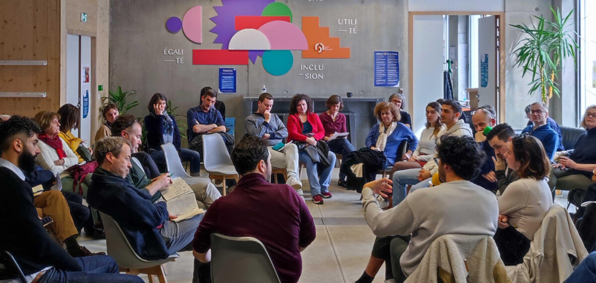
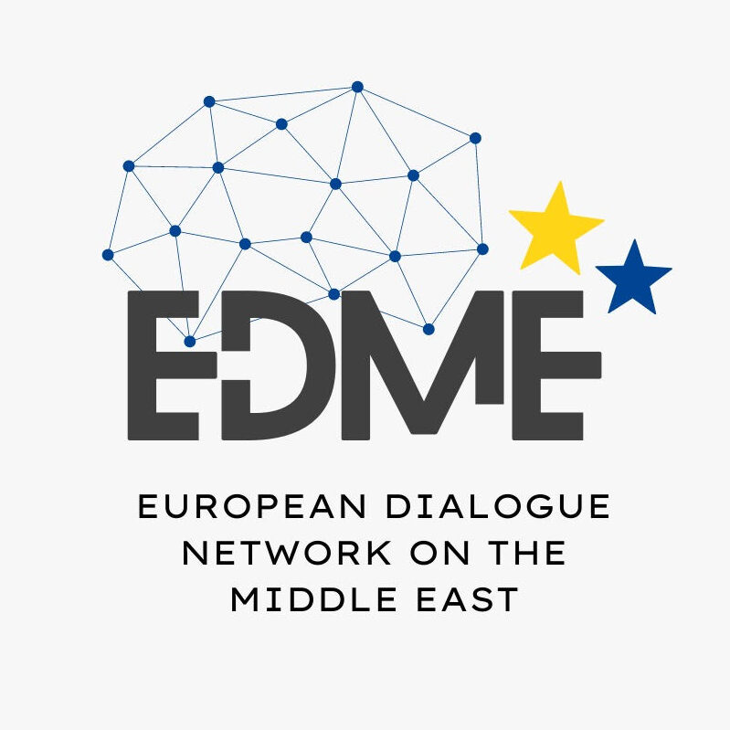

What we do
Dialogue
Our professionally trained facilitators support conversations that are healthy, constructive, respectful and authentic.
Training
We provide in depth training, building skills that enable facilitators to navigate the most difficult interpersonal and group dynamics.
Design
We accompany bridge-building initiatives and inter group collaboration efforts with sound advice to ensure deep learning and restored relationships.
CONNECTIONS
We thrive to connect individuals and organisations that share a common mission around bridge building and social cohesion in Europe and beyond.
ABOUT CONNECTING ACTIONS
Connecting Actions is an international initiative to strengthen the field of citizen,
intercultural, interconvictionnal and inter identity dialogue. Since its creation, it has
convened 6 symposiums gathering civil society leaders and experts to share best practices
and reinforce this field for more impact. We help build bridges between the bridge builders.
The initiative was originally ideated during the 2015 Muslim Jewish Conference with its
first action consisting in mobilizing young Muslim and Jewish alumni around Europe to
help assist refugees by providing food and clothing for them upon their arrival in Europe.
In the backdrop of mounting religious, ethnic and political tensions in Europe, Connecting
Actions seeks to address pressing questions around inter identity tensions and
professionalize a field that has the potential of becoming a key tool of governance and an
essential aspect of diversity and democracy.
Connecting Actions, is a non profit organisation registered in France. Since 2018,
Connecting Actions is leading the newly formed European Institute For Dialogue, gathering a dozen European NGOs working in this field, to reinforce our action and multiply our impact.
Get Involved

Connecting Actions is always looking for volunteers to support its mission to advance the field of citizen dialogue across all lines of difference. Join the team!
If you need expertise and support from Connecting Actions to advance your dialogue efforts within your organisation or networks, let us know!
European Dialogue Network on the Middle East

In July 2022, in Partnership with the Alliance for Middle East Peace (ALLMEP), Connecting Actions initiated and organised a Symposium of French with 15 Civil Society community and interfaith leaders to learn about the art of conducting difficult dialogues around the theme of Israel-Palestine. In 2023, they are expanding this initiative to more Civil Society actors in Europe.